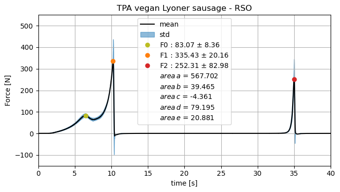

TPA — Sausages — Oil#
"""Tool to plot infer some analysis on TPO"""
from dataclasses import dataclass, field
from os import listdir
import matplotlib.pyplot as plt
from pandas import DataFrame, read_csv, concat
from sklearn.linear_model import LinearRegression
#
import numpy as np
from scipy import sparse
from scipy.sparse.linalg import spsolve
def ZeroOfCurve(df, start, end):
"""Return the zero of a curve in a given interval"""
# create a dataframe with the interval
df = df[start:end]
# find the index of the first value that is bigger than 0
index = df[df > 0].index[0]
return index
def Integral(df, interval):
"""Calculate the integral of a dataframe in a given interval"""
# create a dataframe with the interval
df = df[interval[0]:interval[1]]
# calculate the integral
integral = np.trapz(df, df.index)
return integral
def MaxPoint(df, start_index, end_index):
"""Max point of a dataframe in an interval of the indices"""
max_value = df[start_index:end_index].max()
max_index = df[start_index:end_index].idxmax()
return max_value, max_index
# define the point F0, F1, F2
def PlotPoints(mean, std):
plt.plot(MaxPoint(mean, 0, 8,)[1], MaxPoint(mean, 0, 8,)[0], 'o', color="C8", label=r"F0 : {:.2f} $\pm$ {}".format(
MaxPoint(mean, 0, 8,)[0], round(std[MaxPoint(mean, 0, 8,)[1]], 2)))
# same for [35 : 50]#
plt.plot(MaxPoint(mean, 0, 35,)[1], MaxPoint(mean, 0, 35,)[0], 'o', color="C1", label=r"F1 : {:.2f} $\pm$ {}".format(
MaxPoint(mean, 0, 35,)[0], round(std[MaxPoint(mean, 0, 35,)[1]], 2)))
# same for [35 : 50]
plt.plot(MaxPoint(mean, 35, 50,)[1], MaxPoint(mean, 35, 50,)[0], 'o', color="C3", label=r"F2 : {:.2f} $\pm$ {}".format(
MaxPoint(mean, 35, 50,)[0], round(std[MaxPoint(mean, 35, 50,)[1]], 2)))
F0_x = MaxPoint(mean, 0, 8,)[1]
F1_x = MaxPoint(mean, 0, 35,)[1]
F2_x = MaxPoint(mean, 35, 50,)[1]
# a0 = first point in mean that is bigger then 1.0
a0 = mean[mean > 1.0].index[0]
print("a0", a0)
# a1 = F1_x
a1 = F1_x
# b0 = F0_x
b0 = F1_x
# b1 first point after b0 that is smaller than 0
b1 = mean[mean < 0].index[0]
c0 = b1
# c1 is the biggest index in mean such that
c1 = ZeroOfCurve(mean, b1, 50)
d0 = c1
d1 = F2_x
e0 = F2_x
A = mean[e0:]
e1 = A[A < 0].index[0]
# define the intervals a, b, c, d, e
a = [a0, a1]
b = [b0, b1]
c = [c0, c1]
d = [d0, d1]
e = [e0, e1]
print("a", Integral(mean, a))
print("b", Integral(mean, b))
print("c", Integral(mean, c))
print("d", Integral(mean, d))
print("e", Integral(mean, e))
# calculate the integral of the mean
# add the integrals to the label
plt.plot([], [], ' ', label="$area\, a$ = {:.3f}".format(
Integral(mean, a)))
plt.plot([], [], ' ', label="$area\, b$ = {:.3f}".format(
Integral(mean, b)))
plt.plot([], [], ' ', label="$area\, c$ = {:.3f}".format(
Integral(mean, c)))
plt.plot([], [], ' ', label="$area\, d$ = {:.3f}".format(
Integral(mean, d)))
plt.plot([], [], ' ', label="$area\, e$ = {:.3f}".format(
Integral(mean, e)))
# Global variables
SHOW_PLOTS = False
TEST_OUT = False
@dataclass
class Measurment:
"""Class to represent a measurment"""
filename: str
data: DataFrame = field(init=False)
def __post_init__(self):
self.data = read_csv(self.filename, sep=';', header=0, skiprows=10)
# drop first column
self.data = self.data.drop(self.data.columns[1], axis=1)
#substitute comma with dot
self.data = self.data.apply(lambda x: x.str.replace(',','.'))
self.data = self.data.astype(float)
self.data.columns = [ 'Time', self.filename]
self.data['Time'] = self.data['Time']#.apply(lambda x: round(x, 1))
#print(self.data)
#plt.plot(self.data[self.filename])
def clean(self, **kwargs):
"""Remove all rows with NaN"""
self.data = self.data.astype(float)
#self.data = self.data[self.data["Displacement"] > 0]
#self.data = self.data[self.data["Displacement"] < 85]
self.data = self.data.dropna()
self.data = self.data.groupby(by='Time').mean()
self.data = shift(self.data, **kwargs)
self.data = smooth(self.data, **kwargs)
def plot(self, **kwargs):
"""Plot the data"""
#plt.plot(self.data, label=self.filename, **kwargs)
# extract the force column
force = np.asarray(self.data[self.filename])
def shift(df, **kwargs):
"""Shift the data to the right"""
N = df.where(df > 250).first_valid_index()
index = np.array(df.index)
index = index + 10 - N
df.index = index
return df
def smooth(df, **kwargs):
## take the min in index and max in index
min_index = df.index.min()
max_index = df.index.max()
## create a new index
new_index = np.arange(round(min_index, 1), round(max_index, 1), 0.1)
## create a new dataframe
new_df = DataFrame(index=new_index)
## interpolate the data
new_df = new_df.interpolate(method='linear', axis=0)
## merge the dataframes
new_df = new_df.merge(df, left_index=True, right_index=True, how='outer')
# interpolate the data
new_df = new_df.interpolate(method='linear', axis=0)
return new_df
def PlotterSingle(namedir, N, **kwargs):
measurments = []
exp = DataFrame()
plt.figure(figsize=(7, 4))
for filename in listdir(namedir):
measurments.append(Measurment(namedir+"/"+filename))
measurments[-1].clean(**kwargs)
#measurments[-1].plot()
# check the min-max index in the dataframes
t_min = max([i.data.index.min() for i in measurments])
t_max = min([i.data.index.max() for i in measurments])
#print(round(t_min, 1), print(t_max, 1))
# add to exp dataframe the index that goes from tmin to tmax with increments of 0.1
exp = DataFrame(index=np.arange(round(t_min, 1), round(t_max,1), 0.1))
for m in measurments:
exp= concat([exp, m.data], axis=1)
## if only nans in a row, drop it
exp = smooth(exp)
#sprint(exp)
## fill with meanF nans
#exp = exp.fillna(exp.mean(axis=1))
#
#
#exp.plot(legend=False,linewidth=0.4, figsize=(7, 4), alpha=1)
#
mean = exp.mean(axis=1)
# calculate the integral of the mean
integral = np.trapz(mean, mean.index)
print("integral", integral)
##for i in mean : print(i)
mean.plot(color="black", legend=False, linewidth=1.5,
figsize=(7, 4), label="mean")
display(mean)
plt.grid()
std = exp.std(axis=1)
plt.fill_between(mean.index, mean-std, mean+std, color="C0", alpha=0.5, label = "std")
plt.xlabel("time [s]")
#plt x axes ticks from 0 to 50
plt.ylabel("Force [N]")
plt.xlim(0, 40)
plt.ylim(-150, 550)
plt.title("TPA vegan Lyoner sausage - RSO")
name_save = "TPA_vegan_Lyoner_sausage_RSO"
plt.tight_layout()
PlotPoints(mean, std)
#
plt.legend()
if kwargs.get("save_plots", True):
plt.savefig(namedir+".png", dpi=2000)
# save the data as a csv file
exp.to_csv(str(N)+"test.csv", sep=';')
def PlotterMultiple(namedir, displacement, **kwargs):
# use single plotter to plot multiple plots
plt.figure(figsize=(7, 4))
for N in [2, 4, 6, 8]:
namedir = str(N)+"perc/csv"
PlotterSingle(namedir, N, **kwargs)
p = 0.9
lam = 10**12
niter = 10
kwargs = {"p": p, "lam": lam, "niter": niter}
SHOW_PLOTS = False
N=2
namedir = "lard/csv"
PlotterSingle(namedir, N, **kwargs)
integral 707.81896576604
-2.140 0.454550
-2.130 0.477670
-2.120 0.494940
-2.110 0.498490
-2.100 0.496770
...
47.390 0.448514
47.400 0.447837
47.410 0.447793
47.420 0.447501
47.422 0.447438
Length: 22302, dtype: float64
a0 1.67
a 567.70234190855
b 39.46486938319479
c -4.361272222521827
d 79.19511939884839
e 20.880757937313597
/tmp/ipykernel_36089/3355585946.py:21: FutureWarning: The behavior of obj[i:j] with a float-dtype index is deprecated. In a future version, this will be treated as positional instead of label-based. For label-based slicing, use obj.loc[i:j] instead
max_value = df[start_index:end_index].max()
/tmp/ipykernel_36089/3355585946.py:22: FutureWarning: The behavior of obj[i:j] with a float-dtype index is deprecated. In a future version, this will be treated as positional instead of label-based. For label-based slicing, use obj.loc[i:j] instead
max_index = df[start_index:end_index].idxmax()
/tmp/ipykernel_36089/3355585946.py:21: FutureWarning: The behavior of obj[i:j] with a float-dtype index is deprecated. In a future version, this will be treated as positional instead of label-based. For label-based slicing, use obj.loc[i:j] instead
max_value = df[start_index:end_index].max()
/tmp/ipykernel_36089/3355585946.py:22: FutureWarning: The behavior of obj[i:j] with a float-dtype index is deprecated. In a future version, this will be treated as positional instead of label-based. For label-based slicing, use obj.loc[i:j] instead
max_index = df[start_index:end_index].idxmax()
/tmp/ipykernel_36089/3355585946.py:21: FutureWarning: The behavior of obj[i:j] with a float-dtype index is deprecated. In a future version, this will be treated as positional instead of label-based. For label-based slicing, use obj.loc[i:j] instead
max_value = df[start_index:end_index].max()
/tmp/ipykernel_36089/3355585946.py:22: FutureWarning: The behavior of obj[i:j] with a float-dtype index is deprecated. In a future version, this will be treated as positional instead of label-based. For label-based slicing, use obj.loc[i:j] instead
max_index = df[start_index:end_index].idxmax()
/tmp/ipykernel_36089/3355585946.py:21: FutureWarning: The behavior of obj[i:j] with a float-dtype index is deprecated. In a future version, this will be treated as positional instead of label-based. For label-based slicing, use obj.loc[i:j] instead
max_value = df[start_index:end_index].max()
/tmp/ipykernel_36089/3355585946.py:22: FutureWarning: The behavior of obj[i:j] with a float-dtype index is deprecated. In a future version, this will be treated as positional instead of label-based. For label-based slicing, use obj.loc[i:j] instead
max_index = df[start_index:end_index].idxmax()
/tmp/ipykernel_36089/3355585946.py:21: FutureWarning: The behavior of obj[i:j] with a float-dtype index is deprecated. In a future version, this will be treated as positional instead of label-based. For label-based slicing, use obj.loc[i:j] instead
max_value = df[start_index:end_index].max()
/tmp/ipykernel_36089/3355585946.py:22: FutureWarning: The behavior of obj[i:j] with a float-dtype index is deprecated. In a future version, this will be treated as positional instead of label-based. For label-based slicing, use obj.loc[i:j] instead
max_index = df[start_index:end_index].idxmax()
/tmp/ipykernel_36089/3355585946.py:21: FutureWarning: The behavior of obj[i:j] with a float-dtype index is deprecated. In a future version, this will be treated as positional instead of label-based. For label-based slicing, use obj.loc[i:j] instead
max_value = df[start_index:end_index].max()
/tmp/ipykernel_36089/3355585946.py:22: FutureWarning: The behavior of obj[i:j] with a float-dtype index is deprecated. In a future version, this will be treated as positional instead of label-based. For label-based slicing, use obj.loc[i:j] instead
max_index = df[start_index:end_index].idxmax()
/tmp/ipykernel_36089/3355585946.py:21: FutureWarning: The behavior of obj[i:j] with a float-dtype index is deprecated. In a future version, this will be treated as positional instead of label-based. For label-based slicing, use obj.loc[i:j] instead
max_value = df[start_index:end_index].max()
/tmp/ipykernel_36089/3355585946.py:22: FutureWarning: The behavior of obj[i:j] with a float-dtype index is deprecated. In a future version, this will be treated as positional instead of label-based. For label-based slicing, use obj.loc[i:j] instead
max_index = df[start_index:end_index].idxmax()
/tmp/ipykernel_36089/3355585946.py:21: FutureWarning: The behavior of obj[i:j] with a float-dtype index is deprecated. In a future version, this will be treated as positional instead of label-based. For label-based slicing, use obj.loc[i:j] instead
max_value = df[start_index:end_index].max()
/tmp/ipykernel_36089/3355585946.py:22: FutureWarning: The behavior of obj[i:j] with a float-dtype index is deprecated. In a future version, this will be treated as positional instead of label-based. For label-based slicing, use obj.loc[i:j] instead
max_index = df[start_index:end_index].idxmax()
/tmp/ipykernel_36089/3355585946.py:21: FutureWarning: The behavior of obj[i:j] with a float-dtype index is deprecated. In a future version, this will be treated as positional instead of label-based. For label-based slicing, use obj.loc[i:j] instead
max_value = df[start_index:end_index].max()
/tmp/ipykernel_36089/3355585946.py:22: FutureWarning: The behavior of obj[i:j] with a float-dtype index is deprecated. In a future version, this will be treated as positional instead of label-based. For label-based slicing, use obj.loc[i:j] instead
max_index = df[start_index:end_index].idxmax()
/tmp/ipykernel_36089/3355585946.py:21: FutureWarning: The behavior of obj[i:j] with a float-dtype index is deprecated. In a future version, this will be treated as positional instead of label-based. For label-based slicing, use obj.loc[i:j] instead
max_value = df[start_index:end_index].max()
/tmp/ipykernel_36089/3355585946.py:22: FutureWarning: The behavior of obj[i:j] with a float-dtype index is deprecated. In a future version, this will be treated as positional instead of label-based. For label-based slicing, use obj.loc[i:j] instead
max_index = df[start_index:end_index].idxmax()
/tmp/ipykernel_36089/3355585946.py:21: FutureWarning: The behavior of obj[i:j] with a float-dtype index is deprecated. In a future version, this will be treated as positional instead of label-based. For label-based slicing, use obj.loc[i:j] instead
max_value = df[start_index:end_index].max()
/tmp/ipykernel_36089/3355585946.py:22: FutureWarning: The behavior of obj[i:j] with a float-dtype index is deprecated. In a future version, this will be treated as positional instead of label-based. For label-based slicing, use obj.loc[i:j] instead
max_index = df[start_index:end_index].idxmax()
/tmp/ipykernel_36089/3355585946.py:21: FutureWarning: The behavior of obj[i:j] with a float-dtype index is deprecated. In a future version, this will be treated as positional instead of label-based. For label-based slicing, use obj.loc[i:j] instead
max_value = df[start_index:end_index].max()
/tmp/ipykernel_36089/3355585946.py:22: FutureWarning: The behavior of obj[i:j] with a float-dtype index is deprecated. In a future version, this will be treated as positional instead of label-based. For label-based slicing, use obj.loc[i:j] instead
max_index = df[start_index:end_index].idxmax()
/tmp/ipykernel_36089/3355585946.py:21: FutureWarning: The behavior of obj[i:j] with a float-dtype index is deprecated. In a future version, this will be treated as positional instead of label-based. For label-based slicing, use obj.loc[i:j] instead
max_value = df[start_index:end_index].max()
/tmp/ipykernel_36089/3355585946.py:22: FutureWarning: The behavior of obj[i:j] with a float-dtype index is deprecated. In a future version, this will be treated as positional instead of label-based. For label-based slicing, use obj.loc[i:j] instead
max_index = df[start_index:end_index].idxmax()
/tmp/ipykernel_36089/3355585946.py:21: FutureWarning: The behavior of obj[i:j] with a float-dtype index is deprecated. In a future version, this will be treated as positional instead of label-based. For label-based slicing, use obj.loc[i:j] instead
max_value = df[start_index:end_index].max()
/tmp/ipykernel_36089/3355585946.py:22: FutureWarning: The behavior of obj[i:j] with a float-dtype index is deprecated. In a future version, this will be treated as positional instead of label-based. For label-based slicing, use obj.loc[i:j] instead
max_index = df[start_index:end_index].idxmax()
/tmp/ipykernel_36089/3355585946.py:21: FutureWarning: The behavior of obj[i:j] with a float-dtype index is deprecated. In a future version, this will be treated as positional instead of label-based. For label-based slicing, use obj.loc[i:j] instead
max_value = df[start_index:end_index].max()
/tmp/ipykernel_36089/3355585946.py:22: FutureWarning: The behavior of obj[i:j] with a float-dtype index is deprecated. In a future version, this will be treated as positional instead of label-based. For label-based slicing, use obj.loc[i:j] instead
max_index = df[start_index:end_index].idxmax()
